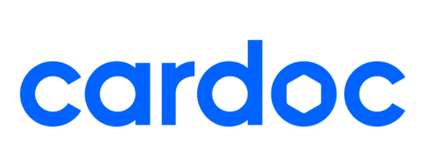
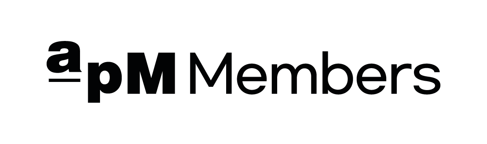
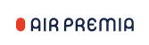
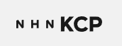

문제를 기능보다 먼저 정의합니다
현업이 실제로 멈추는 지점과 필요한 최소 기능을 먼저 확인합니다. 완벽한 시스템을 기다리기보다, 영향도와 우선순위에 맞춰 작동하는 제품을 먼저 만듭니다.
AI를 활용해 실제 문제를 빠르게 제품으로 만듭니다
결제·커머스·항공·메시징 등 여러 도메인에서 대용량 처리와 외부 연동 시스템을 설계·운영하며, 현업이 실제로 멈추는 지점을 찾아 문제를 정의하고 해결하는 일을 반복해 왔습니다. 최근에는 장애 상황에서 업무 연속성을 확보하는 긴급 운영 도구를 직접 구현하고, 데이터 수집부터 AI 분석·대시보드·알림까지 이어지는 자동화 서비스를 기획부터 운영까지 혼자 만들어보며, 백엔드 엔지니어로 쌓은 실행력을 0에서 1을 만드는 제품 개발로 확장하고 있습니다.
현업이 실제로 멈추는 지점과 필요한 최소 기능을 먼저 확인합니다. 완벽한 시스템을 기다리기보다, 영향도와 우선순위에 맞춰 작동하는 제품을 먼저 만듭니다.
외부 API, DB, 배치, 알림 채널을 하나의 흐름으로 연결합니다. 사람이 반복적으로 조회·정리하던 정보를 AI로 정리하고, 현업이 즉시 활용할 수 있는 화면과 알림으로 바꿉니다.
예외 처리, 재시도, 속도 제한, 로그, 데이터 검증을 기본으로 둡니다. 빠르게 만든 프로토타입도 실제 운영에서 흔들리지 않도록 만드는 데 집중합니다.
연구개발팀 과장
개발팀 팀장 · 백엔드 리드

차량 애프터 서비스 비교견적 플랫폼서버 개발 및 운영

동대문 전자상거래 플랫폼백엔드 리드

국내 신규 LCCI&S 개발팀 · 결제 시스템 개발

국내 PG서버 개발 및 운영
서버 개발 및 운영
| 학교명 | 교육기간 | 학과명·학점 |
|---|---|---|
| 순천향대학교 | 2009.03 – 2016.02 | 컴퓨터 소프트웨어 공학과 · 3.0/4.5 |
| 교육명 | 교육기간 | 교육처 |
|---|---|---|
| 태블로 신병훈련소 25기 | 2024.10 – 2024.11 | 세일즈포스 |
| 데이터분석 데브코스 4기 | 2024.08 – 2024.11 | 프로그래머스 |
| Mashup Java 웹 개발 과정 | 2015.08 – 2016.01 | 쌍용교육센터 |
| 자격증명 | 취득일 | 발급처 |
|---|---|---|
| SQLD | 2024.09.20 | 한국데이터산업진흥원 |
5개 회사에서 맡았던 역할과 기술 스택, 담당 업무를 회사별로 정리했습니다.
국내 10개 문자 중계 사업소 중 한 곳으로, 일 평균 250~300만 메시지를 이동통신사 및 상위라인에 유통합니다.
담당직무연구개발팀 과장
기술스택 담당 업무건설 일용직 구인구직 플랫폼으로, 기존 인력사무소를 방문해야 하는 어려움을 해소하고 열악한 근무 환경과 임금체불 등 건설 근로의 사회적 문제를 해결하고자 하는 서비스입니다.
담당직무개발팀 팀장 (Flutter 주니어 1명, 웹 개발자 주니어 1명 리딩)
기술스택 담당 업무기존 현금과 수기로 이루어지던 동대문 의류 도매시장의 디지털 전환을 위해 동대문 APM 그룹의 자회사로 설립되어, 자체 전자 상품권을 발행·결제·정산하는 서비스를 제공했습니다.
담당직무백엔드 리드 (백엔드 주니어 개발자 2명)
기술스택 담당 업무항공 이용의 불편함을 해결하고 낮은 금액으로 프리미엄급 서비스를 제공하자는 사명의 신규 LCC 항공사입니다.
담당직무I&S 개발팀 · 결제 시스템 개발
기술스택 담당 업무엑심베이는 국내/해외 통합 결제 서비스를 제공하는 글로벌 PG사로 온라인 해외 카드결제 및 간편결제 API를 제공합니다.
담당직무서버 개발 및 운영
기술스택 담당 업무직접 기획·개발·운영하는 사이드 프로젝트를 소개합니다. 문제 정의부터 가설, MVP, 주요 의사결정, 현재 결과와 배운 점까지 제품 관점에서 정리했습니다.
매일 여러 소스에 흩어진 뉴스·시세를 직접 찾아보지 않아도, 시장 개장 전 자동으로 정리된 투자심리 리포트를 받아보는 개인용 자동화 서비스입니다.

최근 주식 시장이 활황인 데 비해 정작 시장을 판단할 지식과 정보는 부족하다고 느꼈고, AI로 종목별 투자 심리를 분석해보고 싶다는 개인적인 동기에서 시작했습니다. 한국·미국 주요 20개 종목의 뉴스와 시세를 매일 여러 소스에서 따로 확인해야 하는 번거로움도 함께 해결하고자 했습니다.
종목별 뉴스 기사 분석 점수와 실제 시장 가격의 움직임이 비슷하게 나타날 것이라고 가정했습니다.
기획, 수집·분석 스크립트 개발, 대시보드 구현, 배포·스케줄링 설정까지 기획부터 운영까지 전 과정을 혼자 맡아 진행한 개인 프로젝트입니다.
서버와 DB를 새로 두지 않고, 무료로 유지 가능한 인프라만으로 전체 워크플로를 끝까지 운영 가능한 형태로 만드는 것을 우선했습니다.
무료 인프라만으로도 수집 → 분석 → 저장 → 배포 → 알림까지 이어지는 파이프라인을 처음부터 끝까지 직접 운영 가능한 형태로 만들 수 있다는 것을 확인했습니다. 또한 AI를 활용한 자동화에서는 분석 실패, 타임아웃, API rate limiting 같은 돌발 상황에 대한 세심한 예외 처리가 필요하다는 것도 배웠습니다.
약 한 달간 데이터를 수집하고 결과를 확인한 뒤, 실제 투자로 이어갈지 판단할 계획입니다.